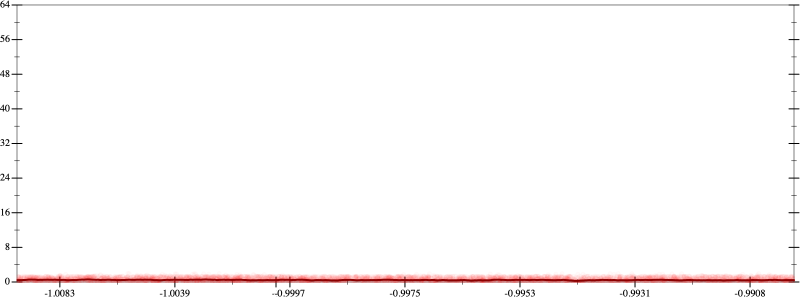
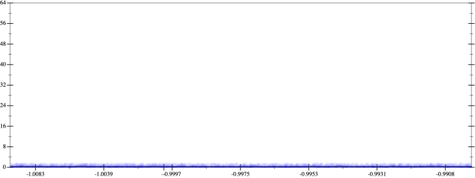
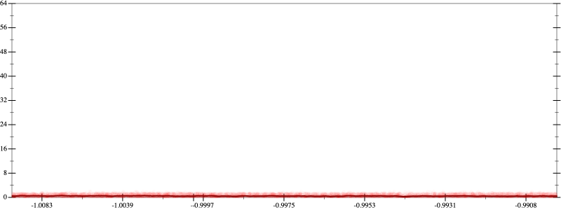
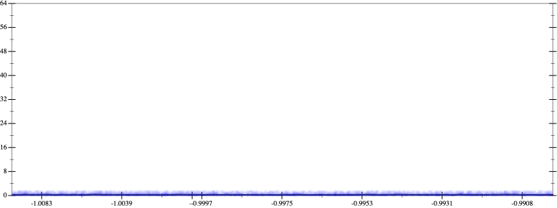

Initial program 0.5
\[\left(\left(\left(\left(\left(1.0 + -6.0 \cdot x\right) + 7.5 \cdot \left(x \cdot x\right)\right) + -3.333333 \cdot \left(\left(x \cdot x\right) \cdot x\right)\right) + 0.625 \cdot \left(\left(\left(x \cdot x\right) \cdot x\right) \cdot x\right)\right) + -0.05 \cdot \left(\left(\left(\left(x \cdot x\right) \cdot x\right) \cdot x\right) \cdot x\right)\right) + 0.001389 \cdot \left(\left(\left(\left(\left(x \cdot x\right) \cdot x\right) \cdot x\right) \cdot x\right) \cdot x\right)\]
Applied simplify0.3
\[\leadsto \color{blue}{\left(\left(x \cdot \left(0.001389 \cdot x\right)\right) \cdot \left(\left(x \cdot x\right) \cdot \left(x \cdot x\right)\right) + \left(x \cdot -6.0 + 1.0\right)\right) + \left(\left(\left(x \cdot x\right) \cdot \left(x \cdot x\right)\right) \cdot \left(0.625 + -0.05 \cdot x\right) + \left(x \cdot x\right) \cdot \left(-3.333333 \cdot x + 7.5\right)\right)}\]
- Using strategy
rm Applied associate-*l*0.3
\[\leadsto \left(\left(x \cdot \left(0.001389 \cdot x\right)\right) \cdot \left(\left(x \cdot x\right) \cdot \left(x \cdot x\right)\right) + \left(x \cdot -6.0 + 1.0\right)\right) + \left(\left(\left(x \cdot x\right) \cdot \left(x \cdot x\right)\right) \cdot \left(0.625 + -0.05 \cdot x\right) + \color{blue}{x \cdot \left(x \cdot \left(-3.333333 \cdot x + 7.5\right)\right)}\right)\]
 
